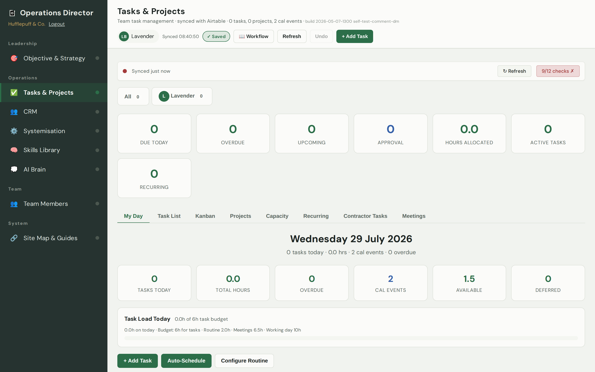
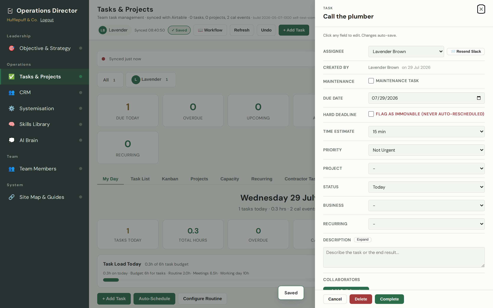
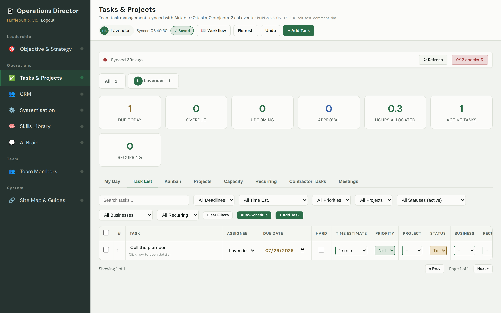
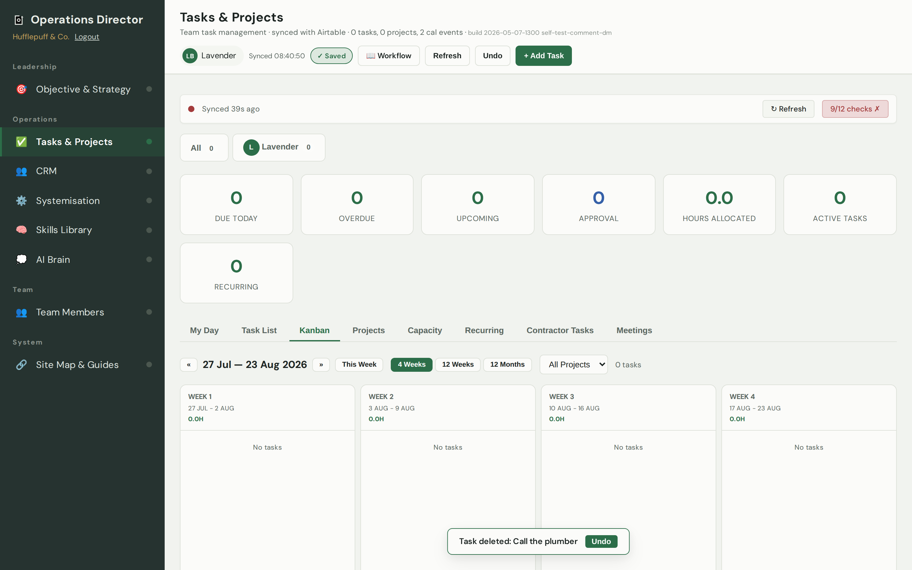

Tasks & Projects
Your guide to this page
What this page is for
It keeps all your work in one place. Each task is one job to do. Tasks can be grouped under a bigger project, given to a team member, and given a due date. You can see it as a simple list, as a plan for just today, or spread across the weeks ahead.
What you can do here
- Add jobs that need doing and give each one a due date.
- Hand a job to a team member so they know it's theirs.
- Group related jobs under a project.
- See what's due today and what's coming up in the weeks ahead.
- Watch your plan turn into action — projects from your Strategy page show up here.
How to add a task
- Click the green + Add Task button (top right).

Start a new job here. - Type what needs doing in a few words.

A short, clear title is all you need. - Choose who it's for and when it's due.

Pick a team member and a date. - That's it — the panel saves as you go. Close it, and your task is on the list.
Done — it's now on the list for everyone to see.
How to update a task
- Click a task in the list to open it.

Everything about the task is here — change any field and it saves as you type. - When the job is finished, click Complete.

Mark it done when it's finished.
Ways to see your work
My Day — today's jobs and how many hours they add up to.
Task List — every task in a table; best for a quick scan or ticking things off.
Weeks ahead — your tasks laid out across the coming weeks, so nothing sneaks up on you.

Where tasks come from
You can add tasks yourself here, and they also arrive automatically from your Objective & Strategy page — when you set your projects for the quarter, the monthly steps drop straight in here as tasks. Tick one off and your plan shows it as done too.